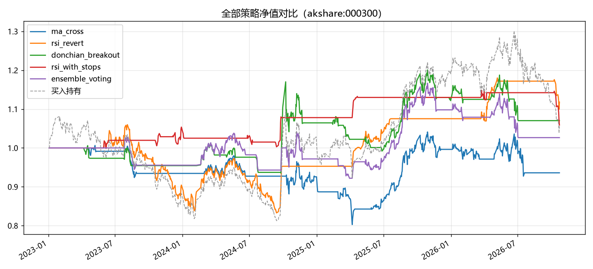

给软件工程学生的第一颗量化种子
一个能跑、能读、能改的 AI 量化研究框架
| 策略 | 累计收益 | 夏普 | 最大回撤 | 胜率 | 交易数 |
|---|---|---|---|---|---|
| 买入持有 | +5.59% | — | — | — | — |
| RSI 均值回归 | +11.81% | 0.11 | -21.43% | 66.7% | 3 |
| 唐奇安突破 | +7.02% | -0.01 | -15.26% | 30.8% | 13 |
| RSI+止损（改进） | +5.89% | -0.09 | -7.80% | 66.7% | 9 |
| AI 投票组合 | +2.65% | -0.13 | -12.02% | 38.5% | 13 |
| 双均线趋势 | -6.41% | -0.33 | -20.25% | 11.1% | 9 |

没有圣杯策略。RSI 在震荡市跑赢，趋势策略在下跌市被反复打脸。 加止损能把回撤从 -21% 压到 -7.8%，但收益也会砍半——这就是真实的交易 trade-off。